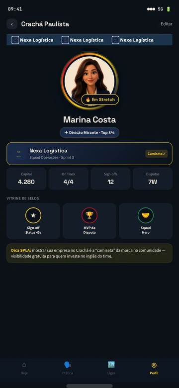
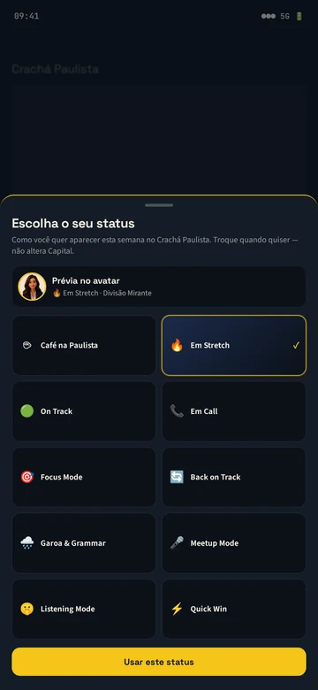
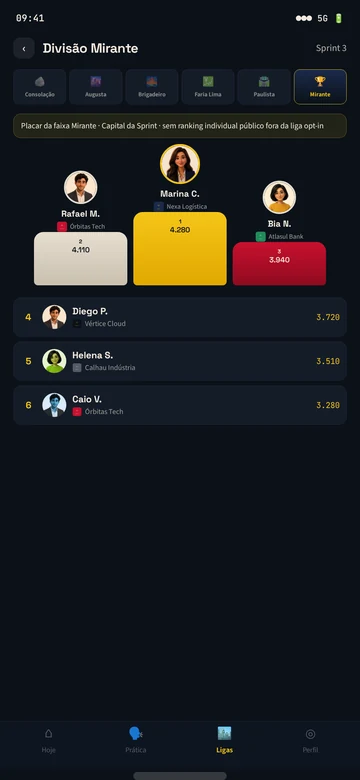
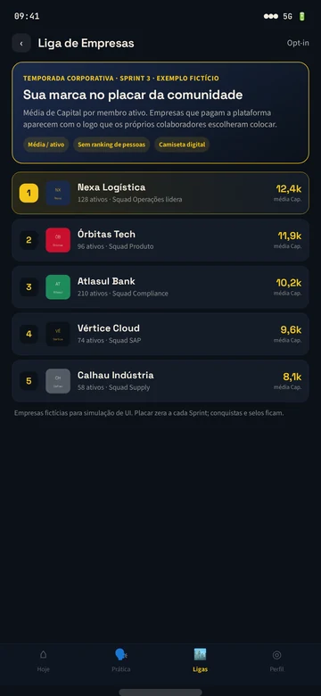
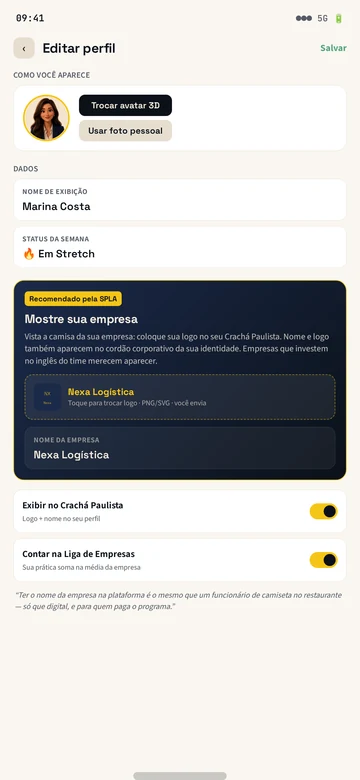

Daily
A sessão do dia, de 20 a 30 minutos, com revisão, algo novo, pronúncia e conversa com a Sophia.
Como é estudar
A SPLA usa a linguagem que você já conhece do trabalho, como daily, sprint e deliverables, para organizar seus estudos. É leve, cooperativo e não pune ninguém.
O dia a dia
A sessão do dia, de 20 a 30 minutos, com revisão, algo novo, pronúncia e conversa com a Sophia.
Você está no ritmo combinado da semana. Simples assim, sem contador que zera.
Entregas de fala, como gravar um status, responder uma pergunta difícil ou apresentar um resultado.
Você escolhe: uma tarefa rápida para garantir o dia ou um desafio maior para se esticar.
No meio da conversa, a Sophia muda o cenário, como acontece na vida real. Você adapta e segue.
No começo da semana você define a meta e no fim vê o fechamento: o que entregou e o que leva adiante.
Sprint de 4 semanas
Seu primeiro Deliverable é apresentar o seu trabalho em 60 segundos, em inglês.
Deliverables da sua área, escolhas entre Quick Win e Stretch, Change Requests e o Forecast de cada semana.
Um Deliverable falado, avaliado por critérios claros, e o seu Boletim do Sprint com a evolução.
Liga de Squads
Você estuda em um squad, que pode ser o seu departamento, a sua turma ou um grupo de amigos. O squad tem uma meta coletiva por Sprint. Não existe ranking individual.
Os pontos da SPLA se chamam Capital. Capital mede constância, não fluência.
Quem faz o quê

Conversa por voz, dicas e Change Requests.

Aquecimento, revisão, pronúncia e o ritmo do squad.

Feedback honesto, checkpoints e o Boletim.
Crachá Paulista · previsto no app em 2027
Sem um perfil, a prática fica escondida: ninguém vê seu momento, as evidências da sua evolução ou o time que veste a mesma camisa digital que você.
Crachá Paulista: seu espaço na comunidade SPLA para mostrar quem você é nesta semana e o que já construiu na caminhada.
Telas de simulação de UI, com pessoas e empresas fictícias. O app tem lançamento previsto para 2027.





Chip da Empresa · para empresas
Vista a camisa da sua empresa: coloque sua logo no seu Crachá Paulista. O nome e a marca se repetem no cordão com as cores da empresa. Essa camiseta digital acompanha o aluno e dá visibilidade a quem investe no inglês do time.
Na Liga de Empresas, a simulação usa a média de Capital por membro ativo, não um placar individual. Tamo junto: as pessoas praticam e a cultura aparece.
Ver o Crachá para empresas